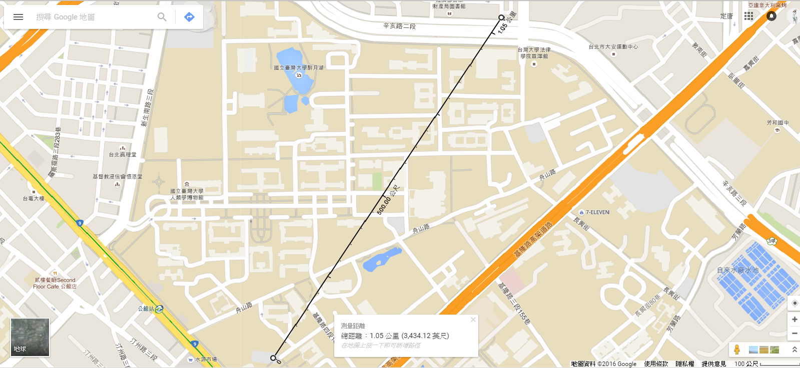

| 距離(經由Google計算，約為) |  |
| 騎腳踏車所需時間(速度約5.6m/s，採用維基百科建議數據) | 約需180秒 | 餐廳資訊 |
印渡風情
印度咖哩/印度香料飯/印度烤餅
紫牛 平價牛排/麻辣臭豆腐 師大第一腿 泰式碳烤雞腿飯/豬肉飯/豬排飯/泰北打拋碎肉飯 品香鐵板炒飯 各式蛋炒飯/蚵仔煎/米粉/冬粉/板條/肉羹麵 118茶舖 鮮奶仙草凍/小芋圓奶茶/金桔檸檬 口味多元化，價格實在 Curry Kitchen咖哩廚房 各式咖哩/焗烤麵/日式炸豬排飯/鰻魚飯 |
| 價位 | 約90元/餐 |